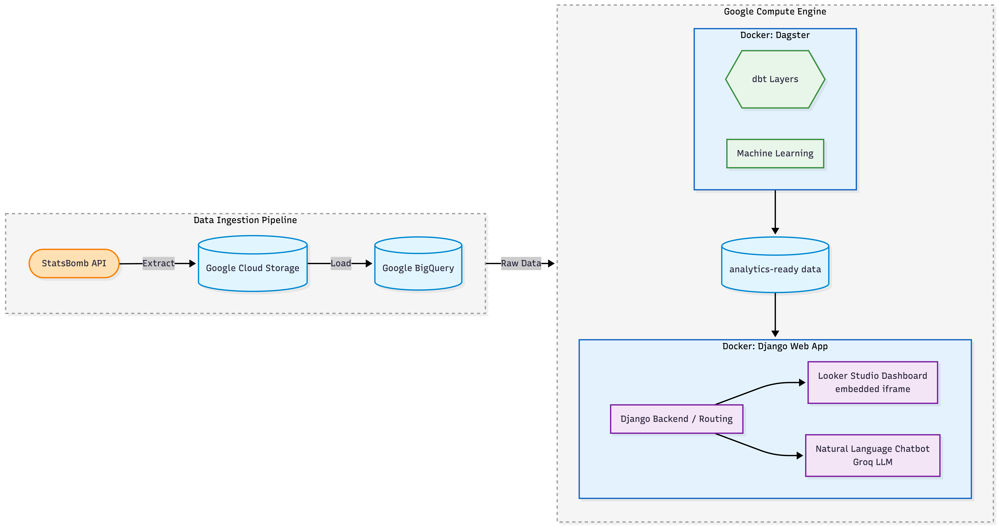

Introduction
Picture this: a national team coach is picking a squad for the next international window. A player has been excellent for their club all season — but do they actually play the same way when they pull on their country’s jersey? And if a scout wants to find “pressing forwards” in La Liga without writing a single line of SQL, can they?
These are exactly the kinds of questions football analysts ask every day. Our UBC Master of Data Science capstone project with the Trilemma Foundation set out to answer them — by building a fully automated analytics platform on top of StatsBomb open data.
Every match in modern football generates thousands of tracked events: passes, carries, pressures, shots, and more. The hard part isn’t having data — it’s turning 12 million raw events into insights that scouts, coaches, and analysts can actually use. That’s where our project comes in.
In this post, I’ll walk you through what we built, how the analytics work, and what we learned about player roles and consistency across club and country. No SQL or machine learning background needed.
By the end, you’ll understand how we classify player archetypes, why Lionel Messi shows up as different types in different competitions, and how a chatbot lets non-technical analysts query the full dataset in plain English.
The Problem
StatsBomb open data is one of the richest publicly available football datasets out there (StatsBomb 2024). It tracks every on-ball action at sub-second granularity — shots, passes, carries, pressures, dribbles, and more — across 16 competitions spanning Europe, South America, North America, and international tournaments.
But here’s the catch: the data is deeply nested, spread across thousands of JSON files, and nearly impossible to query without writing complex SQL. Analysts who couldn’t code were effectively locked out.
Trilemma Foundation needed a product that could answer tactical questions — which players fit a pressing role? Who performs differently for club vs country? — without custom queries for every request. We refined that into three research questions:
- RQ1 (Player archetypes): What tactical roles exist across European football, and how do they differ by position and competition?
- RQ2 (Cross-context consistency): Do players maintain similar profiles for club and country, and who specializes in one setting?
- RQ3 (Natural language access): Can a non-technical analyst query the dataset in plain English and get accurate answers in seconds?
The Data
All data comes from the StatsBomb open dataset via the statsbombpy Python library. Three core tables power everything:
| Table | What it contains | Scale |
|---|---|---|
| Matches | One row per match | 3,464 matches |
| Events | One row per on-ball action | ~12.2 million rows |
| Lineups | One row per player appearance | 165,820 rows |
The events table is the analytical backbone. Passes dominate (~3.4M), followed by ball receipts (~3.2M), carries (~2.6M), and pressures (~1.1M). There are 88,023 shots with expected goals (xG) values, covering 10,808 distinct players across 308 teams.
A few practical constraints shaped our design:
- 270-minute minimum. We only score players with at least 270 minutes in a season (roughly three full matches). Below that threshold, a single great game can distort per-90 stats.
- Men’s senior competitions only. The open tier doesn’t cover everything, and competition coverage is uneven — La Liga has complete seasonal data, while some Champions League history is scattered.
- Quality handling. Missing substitution times and positions required careful preprocessing before any modelling could begin.
How the Analytics Work
Our analytical work addresses how players play, not just how many goals they score. Two models sit on the same 13 per-90 StatsBomb features — covering attack, ball progression, defending, and efficiency:
- PCA + K-Means clustering for tactical archetypes
- Within-context z-score scoring for club vs national consistency
Both run on a shared automated pipeline:

StatsBomb data flows through Google Cloud Storage into BigQuery, gets transformed with dbt (staging → intermediate → marts), enriched by Python ML scripts, and is served through a Django app with an embedded Looker Studio dashboard and Groq-powered chatbot. Dagster orchestrates weekly full runs and hourly refreshes.
Player Archetype Clustering
We cluster player-seasons after applying the 270-minute minimum (n = 5,469 outfield players, 5,759 including goalkeepers). Goalkeepers are excluded from K-Means and assigned a fixed label because their event profiles are structurally different from outfield players.
Thirteen per-90 metrics span the full pitch:
- Attacking: xG per 90, shots per 90, xG per shot
- Progression: passes, progressive passes, pass completion %, carries, dribbles
- Defending: pressures, interceptions, blocks, clearances, duels
After median-imputing missing values, clipping outliers at the 99th percentile, and standardizing features, PCA retains components explaining 80% of variance. K-Means with k = 5 is applied to the reduced space, producing five interpretable outfield archetypes:
| Archetype | Player-seasons | Tactical profile |
|---|---|---|
| Low Activity | 1,963 | Low volume across all metrics. Squad players and limited roles |
| Defensive Anchor | 1,470 | High clearances, interceptions, duels. Low attacking output |
| Creative Playmaker | 807 | High pass completion, progressive passes, carries. Attacking midfielders |
| Pressing Forward | 766 | High pressures, shots, and xG. High-energy forwards and pressing wingers |
| Creative Winger | 463 | High dribbles, carries, shots. Direct wide attackers |
| Goalkeeper | 290 | Assigned by position. Excluded from K-Means |
Archetypes describe how a player is used in a given season, not a fixed career identity. Lionel Messi is mostly classified as Creative Winger but appears as Pressing Forward during Copa América 2024 — consistent with Argentina’s more compact national-team system in that tournament.

Club vs National Consistency Scoring
For 489 dual-context players with at least 270 minutes in both club and national football, we standardize each of the 13 features within context. Club z-scores compare a player only to other club players; national z-scores compare only to other national-team players.
From there we compute:
- Performance scores — how strong a player is vs peers in each setting
- Consistency score — how similar a player’s profile is across contexts (1 minus the mean absolute z-gap)
- Four performance quadrants — by median splits on club and national performance
| Club vs median | National vs median | Quadrant |
|---|---|---|
| ≥ median | ≥ median | Elite |
| ≥ median | < median | Club Specialist |
| < median | ≥ median | International Specialist |
| < median | < median | Underperformer |
Progressive passing into the attacking third best separates club-focused from national-focused specialists. An “Elite” player outperforms cohort medians in both settings — but a stable profile isn’t the same as a strong one. Many players look similar across contexts while ranking below average in both.
What We Found
RQ1: Position Drives Role More Than League
Chi-square tests show that position drives archetype assignment more strongly than competition. In plain terms:
- Center backs concentrate in Defensive Anchor and Low Activity. Attacking clusters are rare.
- Forwards and attacking mids skew toward Pressing Forward and Creative Winger.
- Central mids spread across Creative Playmaker, Pressing Forward, and Low Activity — reflecting overlapping box-to-box roles.
- Full backs often land in Creative Winger or Creative Playmaker when their profiles emphasize carries and progressive passing.
League effects are secondary but visible. Serie A has the largest Low Activity share among the top five leagues. Bundesliga and La Liga show relatively more Pressing Forwards. The same position can shift 5–15 percentage points in archetype share between leagues — so filter by position before comparing competitions.
| Competition | Largest archetype | Second largest | Notable pattern |
|---|---|---|---|
| La Liga | Defensive Anchor (304) | Low Activity (167) | Highest volume. Anchors lead |
| Serie A | Low Activity (240) | Defensive Anchor (138) | Most Low Activity share among top five |
| Ligue 1 | Defensive Anchor (175) | Low Activity (148) | Similar anchor vs low-activity mix |
| Premier League | Defensive Anchor (169) | Low Activity (163) | Near-even top two clusters |
| Bundesliga | Defensive Anchor (145) | Low Activity (121) | Smallest top-five sample. More Pressing Forward (83) |
RQ2: A Third of Players Specialize in One Context
Of 489 dual-context players:
| Quadrant | Players | Share |
|---|---|---|
| Elite | 157 | 32.1% |
| Underperformer | 156 | 31.9% |
| Club Specialist | 88 | 18.0% |
| International Specialist | 88 | 18.0% |
About two thirds of the cohort rank above or below peer median in both settings rather than in only one. Comparing Club Specialist vs International Specialist players, the largest gaps are in passes into the attacking third per 90, interceptions per 90, and carries into the final third per 90 — system and role differences, not raw goal output, drive the split.
Defenders show slightly higher mean consistency than forwards, suggesting attacking roles shift more between club tactics and national setups.

RQ3: Ask Questions in Plain English
The Groq-powered Django chatbot returns BigQuery-backed answers to plain-English questions in under ten seconds. It was tested on representative analyst questions — player rankings by archetype, cross-context comparisons, competition filters — and consistently applied the same eligibility rules as the dashboard, including the 270-minute threshold.
Advanced Mode exposes the generated SQL for audit, and a read-only SQL guard blocks destructive queries.

The Product
We delivered a unified Django web application combining two interfaces:
- Looker Studio dashboard — visual access to pre-computed results (archetype distributions, consistency quadrants, player rankings) filterable by position, competition, and archetype. Great for regular reporting and communicating findings to non-technical stakeholders.
- Plain-English chatbot — covers ad-hoc questions outside fixed dashboard charts, returning mart-backed answers with SQL audit trails.
Why both? Trilemma’s analysts operate at two levels of inquiry that no single tool handles alone: broad visual exploration and specific ad-hoc questions. A notebooks-only approach was inaccessible to non-technical staff; a dashboard alone couldn’t replace flexible querying without Looker edit access.
Strengths: the Dagster-automated pipeline refreshes all data weekly with zero manual intervention. The product is fully reproducible from a single docker compose up and documented for independent use.
Limitations: the chatbot handles single-step queries only — multi-step reasoning (e.g., tracking a player’s archetype across seasons before comparing against national peers) isn’t yet supported. Both interfaces are scoped to men’s competitions, and pre-defined dashboard charts can’t be customized without Looker Studio access.
Why This Matters
You might wonder: “If archetypes describe playing style, not transfer value, what’s the point?” Great question.
For Scouts and Analysts
- Archetype labels help profile scouting targets and assess squad balance before a transfer window — replacing ad-hoc SQL with a filterable dashboard.
- Consistency scores provide a data-grounded tool for national team selection — showing who thrives in both contexts vs who specializes.
- The chatbot removes the SQL barrier entirely for day-to-day analytical work.
For Fans
Understanding these analytics makes watching football more interesting:
- See why a player might excel for their club but struggle internationally (or vice versa)
- Appreciate how tactical systems shape player profiles — Messi as Pressing Forward at Copa América 2024 tells a story about Argentina’s system
- Follow the conversation when pundits discuss “pressing forwards” or “progressive passers” with actual data behind the labels
Conclusion
The original problem was simple: Trilemma Foundation analysts had no scalable way to extract tactical insights from StatsBomb event data without writing complex SQL. We addressed that with three research products on a single automated pipeline.
RQ1 established that five tactical archetypes emerge from 5,759 player-seasons across 16 competitions, with position as the dominant driver. RQ2 found that 36% of dual-context players specialize in one setting while 32% perform above peer median in both. RQ3 demonstrated that a Groq LLM reliably translates plain English into accurate BigQuery SQL.
A key lesson: product form matters as much as model quality. Combining a visual dashboard with a conversational interface gives analysts coverage that neither tool provides independently.
Key Takeaways
- Five outfield archetypes (plus goalkeepers) emerge from 13 per-90 StatsBomb features using PCA + K-Means
- Position drives role assignment more strongly than league or competition
- 36% of dual-context players specialize in club or national football; system differences — not goal output — drive the split
- A plain-English chatbot lets non-technical analysts query 12+ million events without writing SQL
- The full platform refreshes weekly and deploys with a single Docker command
Quick Reference: Key Terms
Archetype: A tactical role label (e.g., Pressing Forward, Creative Playmaker) assigned based on a player’s per-90 event profile in a given season.
Per-90 metrics: Statistics normalized to a full 90-minute game, so players with different minutes played can be compared fairly.
Consistency score: A measure of how similar a player’s tactical profile is when playing for club vs country (1 = identical profile, 0 = completely different).
xG (Expected Goals): A metric estimating the quality of a shooting opportunity based on factors like distance, angle, and defensive pressure.
Quadrant: One of four categories (Elite, Club Specialist, International Specialist, Underperformer) based on a player’s performance vs peers in each context.
Want to Learn More?
Explore the full project repository and documentation:
- Project repository: UBC-MDS-Soccer-Capstone-2026
- Consistency methodology: Consistency Explorer appendix
- Pipeline architecture: Partner handover guide
- StatsBomb open data: github.com/statsbomb/open-data